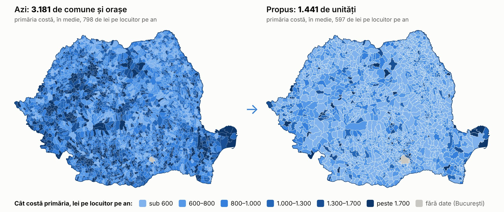

Reorganizarea administrativă a României · date publice, reguli verificabile
Banii pentru apă și canalizare există. Îi cheltuim pe administrație.
Comunele se comasează după reguli publice: cel puțin 3.000 de locuitori, 10.000 cu oraș, iar primăria rămâne la cel mult 30 de minute de orice sat. Consiliile județene și prefecturile urcă la regiune.
Sinteza datelor
Ce se schimbă, în cifre: unități, bani, aleși, drumul până la primărie, pe țară, pe regiuni și pe județe
De unde vin banii
Economia pe an, pe surse; plaja arată ipotezele împinse la capete
Cât costă primăria, pe locuitor
Aparatul administrativ pe an, după mărimea localității (execuția bugetară 2025)
Harta costului: azi și după comasare
Cât costă primăria pe fiecare locuitor, pe an: țara se luminează când primăriile mici se unesc

Administrația, azi și propus
Fiecare nivel, cu ce rămâne și ce se schimbă
Pe regiuni
Comune și orașe azi → unități după, și economia pe an. Clic pe o regiune: simularea ei
Simulări
Fiecare variantă, cu harta și cifrele ei. Clic pe una: se deschide pe hartă, unde poți schimba regulile
Comasarea: variantele comparate
Aceleași date, alte reguli, rulate pe toată țara. Fiecare variantă câștigă bani și costă drum: cât de mult din fiecare
Cifrele, ca tabel
Comasarea comunelor, pe hartă
Ipoteza biroului din sat
Economia la primării, după cât păstrează unitatea nouă din aparatul fiecărei primării care se unește cu ea
Regiunile
Regiunile: variantele comparate
Situația de azi lângă propunere și alternative, pe patru măsuri. Clic pe o bară: harta variantei
Cifrele, ca tabel
Datele pe județe
Toate cele 41 de județe; Bucureștiul intră în unitatea Capitalei, la Ilfov
Clic pe titlul unei coloane: sortare. Clic pe un județ: simularea lui, pas cu pas
Cifrele sunt calculate cu regulile propuse (setul v2) pe datele publice: execuția bugetară 2025 (Ministerul Finanțelor), populația rezidentă la 1 ianuarie 2026 (INS), timpii de drum pe rețeaua OpenStreetMap, standardele de cost „Anghel Saligny”. Tot calculul, în sinteză, raport și metodologie.